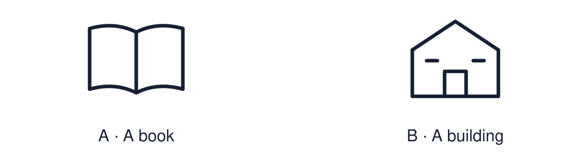

Arrival choices
Previous lesson reminder:

Start with 1 and 2. Try 3 and 4 when ready. Reading and exact scribing are available.
1 Why is the watch special to Mina?
Support: Use the reminder strip or talk it through with an adult.
2 Which meaning fits Bible?
Support: Choose: The holy book of Christians OR The holy book of Muslims.
3 Where is a Torah scroll kept in a synagogue?
Support: Use the model evidence anchor C or read one relevant card together.
4 Is a mosque a book or a place?
Support: Give a reason when ready.
Stretch: use a precise example or explain which detail supports your answer.
Evidence cards
Read, point or listen. Keep the source label with any detail you use.
A Bible and church
The Bible is the holy book of Christians. Many Christians meet to worship in a church. Some read the Bible at home as well.
Source: Authored RE summary
Limit: Christians worship and read in many different ways.
B Qur’an and mosque
The Qur’an is the holy book of Muslims. Many Muslims pray together in a mosque. Many keep the Qur’an in a clean, high place to show respect.
Source: Authored RE summary
Limit: Muslim practice varies between families and communities.
C Torah and synagogue
The Torah is sacred to Jewish people. In a synagogue the Torah scroll is kept in a special cupboard called the Ark. Readers often use a pointer instead of touching the words.
Source: Authored RE summary
Limit: Jewish practice varies between communities.
D Book or place?
A sacred book is read or listened to. A sacred place is somewhere people go. Both can be special to believers.
Source: Authored classroom resource
Limit: A book or place is not the whole religion. It is one part of it.
Shared investigation
1. Sort each book or place under the faith it belongs to.
2. Say one way believers show that it is special.
Work with a partner or adult, or use your own table. One person suggests; the other checks the evidence. Swap after one turn. Passing is allowed.
Move or match the cards
| Cards to use |
|---|
| The Bible |
| A synagogue |
| The Qur’an |
Possible labels: Christianity / Islam / Judaism
Support: Show two choices. Read one short instruction. Point, match or say a word, then add a reason when ready.
Further challenge: Explain one way a believer might show respect for a sacred book.
Supported independent task
Complete this route only. Recognise one special book or place linked to a faith.
1. Choose one book or place card.
2. Match it to its faith: Christianity, Islam or Judaism.
3. Point to or say one reason it is special.
Support: Show two choices. Read one short instruction. Point, match or say a word, then add a reason when ready. Complete the organiser one space at a time. The ___ is special to ___ because ___.
An adult may read or scribe your exact response. They should not choose the answer.
Standard independent task
Complete this route only. Recognise one special book or place linked to a faith.
1. Choose one sacred book or place.
2. Match it to its faith and label it.
3. Explain simply why it is special to some believers.
Support: The ___ is special to ___ because ___.
Check the required evidence and revise one detail.
Stretch independent task
Complete this route only. Recognise one special book or place linked to a faith.
1. Choose one book and one place from the same faith.
2. Explain how they are linked.
3. Describe one way believers show respect and say why.
Support: Choose the evidence independently. Use the frame only if it helps.
Explain one way a believer might show respect for a sacred book.
Exit ticket
Choose a response mode. You may give your answers privately to an adult.
Where is a Torah scroll kept in a synagogue?
Is a mosque a book or a place?
Support: The ___ is special to ___ because ___.
Further challenge: Explain one way a believer might show respect for a sacred book.